| N° | Nome | Lançamento | Imagem |
|---|---|---|---|
| 16° | Skyward Sword | 2011 | 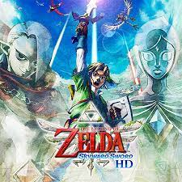 |
| 12° | Minish Cap | 2004 |  |
| 10° | Four Swords | 2002 | 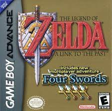 |
| 5° | Ocarina of Time | 1998 |  |
| a | Hero Fails | aaaaaaaaaaaaaaaaaaa | Hero Succeeds | |||
|---|---|---|---|---|---|---|
| Child Timeline | Adult Timeline | |||||
| N° | Nome | Lançamento | Imagem |
|---|---|---|---|
| 3° | A Link to The Past" | 1991 | 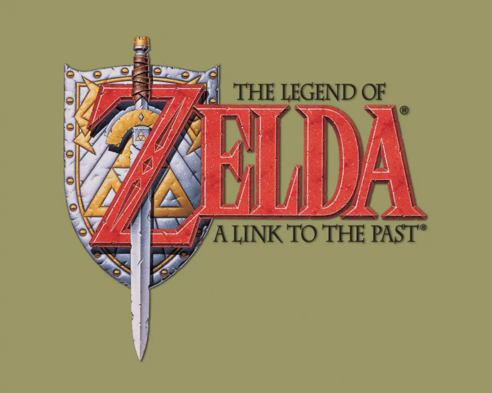 |
| 4° | Link's Awakening | 1993 |  |
| 7° | Oracle of Seasons | 2001 | 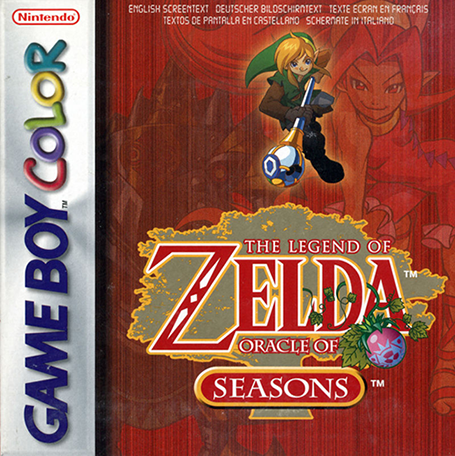 |
| 8° | Oracle of Ages | 2001 |  |
| 17° | A Link Between Worlds | 2013 | 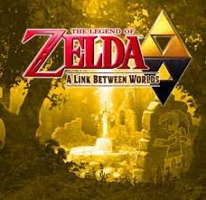 |
| 18° | Triforce Heroes | 2015 | 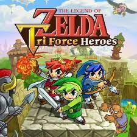 |
| 1° | The Legend of Zelda | 1986 |  |
| 2° | Adventure of Link | 1987 |  |
| N° | Nome | Lançamento | Imagem |
|---|---|---|---|
| 6° | Majora's Mask" | 2000 | 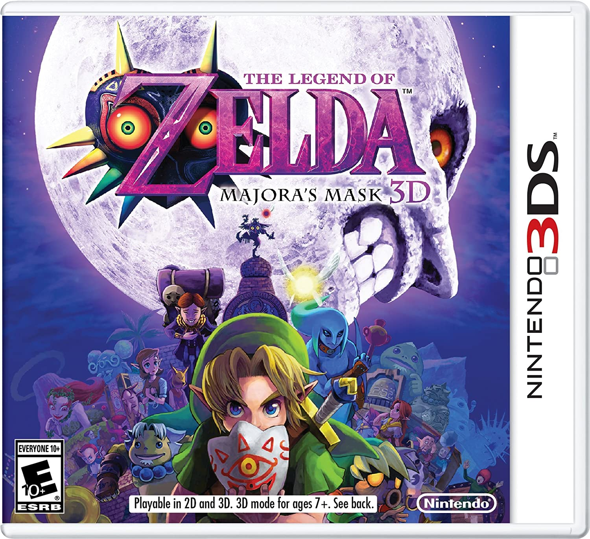 |
| 13° | Twilight Princess | 2006 |  |
| 11° | Four Swords Adventures | 2004 | 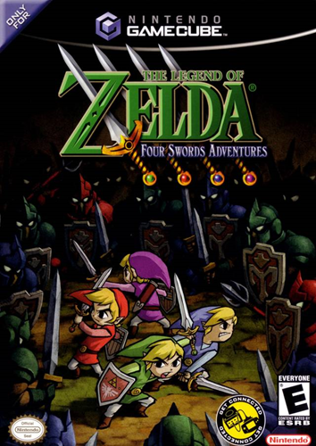 |
| N° | Nome | Lançamento | Imagem |
|---|---|---|---|
| 9° | Wind Waker" | 2002 | 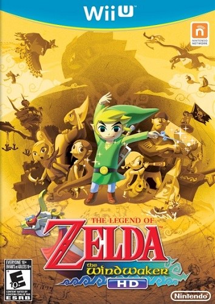 |
| 14° | Phantom Hourglass | 2007 | 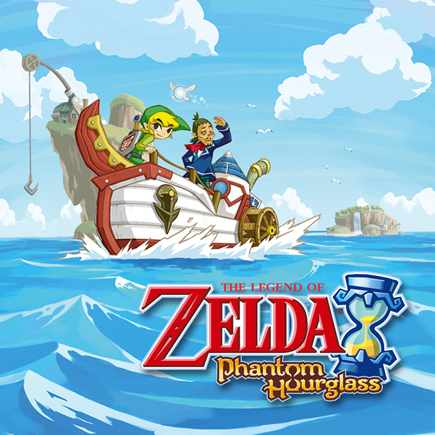 |
| 15° | Spirit Tracks | 2009 |  |
| N° | Nome | Lançamento | Imagem |
|---|---|---|---|
| 19° | Breath of the Wild" | 2017 | 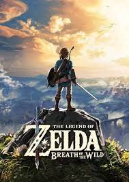 |
| 20° | Tears of the Kingdom | 2023 | 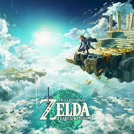 |